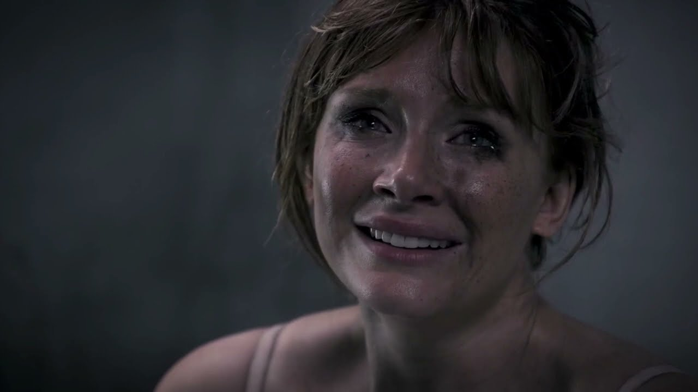

Bem-vindo à Vida Perfeita!

Compartilhe sorrisos, ganhe cinco estrelas e desbloqueie o estilo de vida exclusivo que você merece. Sua reputação é o seu maior ativo social e financeiro.
1) Como funciona um sistema de notas?
O Sistema de notas é baseado em um esquema classificativo, baseado em ranqueamento a partir de estrelas 1-5. Suas notas, atribuídas por pessoas que você encontra na sociedade, são uma média de todas as notas que você recebeu/recebe ao longo de sua trajetória.
2) Um comportamento pode mudar sua nota?
Sim, por se tratar de uma classificação que depende de avaliação externa - dependendo do comportamento realizado - influencia diretamente na percepção da imagem do avaliado aos seus avaliadores (impactando diretamente na sua avaliação/nota).
3) Isso gera comportamentos falsos?
Com certeza. Durante grande parte do episódio, a protagonista é completamente influenciada pelo seu senso comparativo e de necessidade de aprovação; moldando-a em todos os seus comportamentos, incluindo na criação de uma falsa imagem (gerada a partir dos mesmos na busca por aprovação).
4) Tem relação com a realidade?
Completamente. A série explora de maneira mais agressiva algo que, metafisicamente, já ocorre de maneira virtual.
Atualmente, todas as pessoas que convivem, estão sujeitos a uma coerção social: esperam algo de "você". Caso isso não seja atendido de alguma maneira, há alguma tendência nessa desaprovação (seja ela coletiva ou individual).
Quanto a personagem apresentada, a sua busca por constante "estrelas" é muito bem apresentado por envolver esse grande problema nessa cadeia de pressão da sociedade, necessidade por aprovação alheia.
Portanto, esse fenômeno apresentado é a intensificação de uma falta de identidade a qual todos estão sujeitos em sua juventude em diante: "quem sou eu?"; Com o advento da internet, esse processo aumentou esta problemática, expondo-a de maneira clara, mas implícita (por haver um cegamento proposital e confortável proveniente de um consenso comunitário).
Obras como essa, ao hiperbolizar a temática, trazem uma boa visibilidade e despertam seriedade e senso crítico que merecem-na.